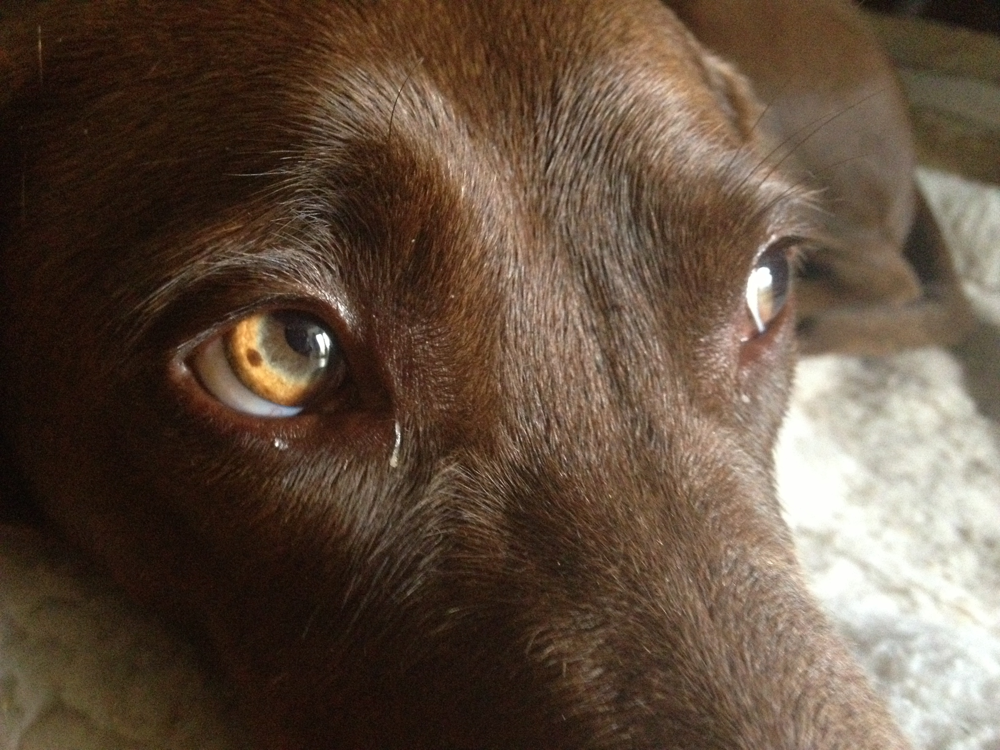
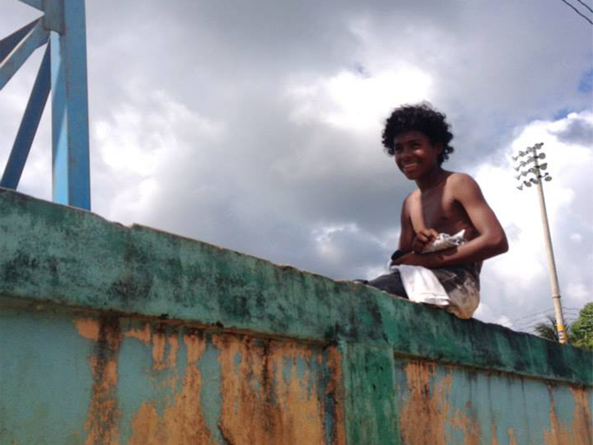

Photographs
Digital image galleries are nice, but what I really love are pictures you can hold in your hand, the kind that sit in your parents' attic for years just waiting to be rediscovered. I have become an avid iPhone photographer over the years, printing out my best shots and hanging them on the wall.Many of these photos were taken on the Caribbean coast of Nicaragua, where I spent two years as a Peace Corps volunteer. They provide a little glimpse into the lives of my friends and family, who taught me (almost) everything I know about patience and generosity.
Click each thumbnail for an expanded view
- 

- 